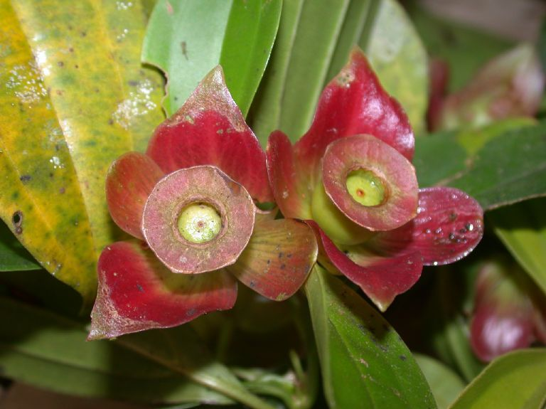

San Miguel
Es una especie nativa, puede ser encontrada en Costa Rica o Panamá,su apariencia es la de un arbusto, usualmente crecen entre árboles que están a orillas de ríos, potreros, cercas, en los bordes de los bosques y charrales.

Flores
Las flores de san miguel poseen un aroma dulce que atrae algunos insectos.
En algunos lugares se comen las flores y los botones, estas se pueden utilizar para hacer ensaladas y otras preparaciones aprovechando su sabor amargo.

Fruto
Los frutos del San Miguel, son bayas rojizas de 2cm de diametro
Información
País de Origen: Costa Rica,Panamá
Nombre científico: Blakea gracilis
Altura Maxima: 3m - 5m